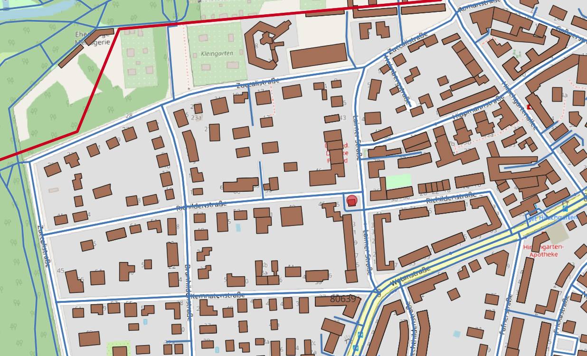
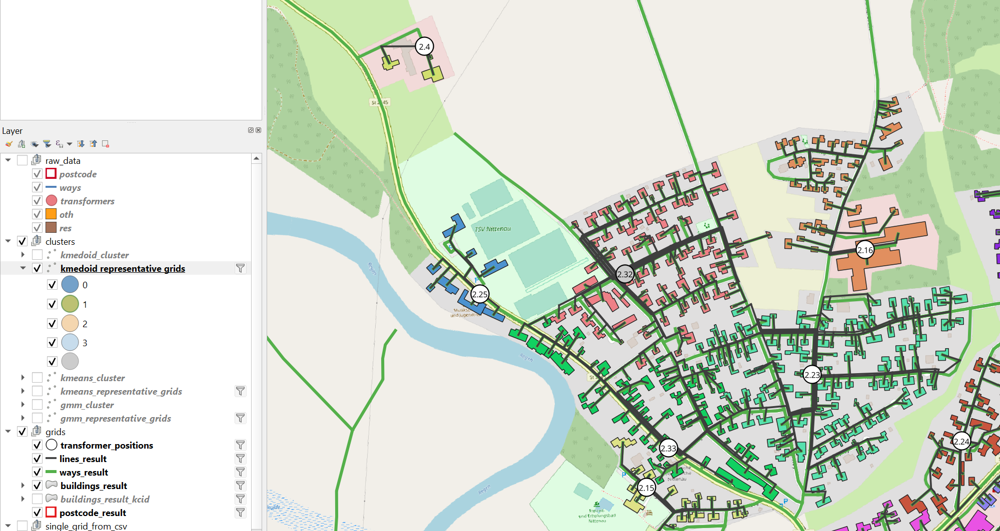

QGIS Visualisation
Open QGIS.
Visualisation structure
The visualisation takes the geometry columns from the pylovo database. The layer names in QGIS correspond to the database table names. In QGIS the layers have been grouped:

Individual elements or groups can be selected for visualisation.
Raw Data
Look at the geodata pylovo uses to generate the grids. This data does not change for different versions.
{kind=link}
If you find any irregularities in your grid: Check the raw data: Have the buildings been imported as expected? Are the ways complete and connected?
Grids
These are the results of the pylovo grid generation. If you have created networks for the same PLZ with multiple versions make sure to filter the version you would like to see. Click on the filter symbol next to the layer name. In the query panel you can apply a filter like: “version_id”=’3.8’.

If you would only like to see a specific grid enter a query like: “version_id” = ‘3.3’ AND “in_building_cluster” = ‘5’ AND “k_mean_cluster” = ‘1’.
Pylovo partitions the buildings of a PLZ for a grid using k-means cluster (kcid, k-means cluster ID) and building cluster (bcid, builings cluster ID).
Some more specific information about the different layers:
Transformers
black circle with white filling
within circle: cluster - ID: [kcid].[bcid]
e.g. 5.18: kcid 5, bcid 18
transformers that a negative bcid are real transormers that were imported from OSM e.g. 1.-1
Buildings
The buildings (consumers) of each grid are colored in a different colour. If you visualise a new postcode area that has a cluster ids that has not previously existed, e.g. 9.59 and 10.01, they will have the same colour. In this case douple click on the layer. Go to the symbol tab. click on delete all, classify. Now for all cluster IDs the colours will be newly created.
Postcode
On the outside of the postcode area marked in red, you will find the PLZ code.
Clusters
By selecting the cluster layer, the cluster index for each grid can be shown. It can be identified by the color of the transformer.

Representative Grids
Similarly the representative grids of the clusters can be shown.
{kind=link}
Visualize from csv
With the files export_grid_gis_data_as_csv and export_grid_gis_data_as_csv_for_multiple_plz the
pandapower networks’ information can exported to csv. This is performed by the function
- plotting.export_net.get_bus_line_geo_for_network(pandapower_net, plz, net_index=0)
get bus and line data for a single pandapower net, export lines (cables) and buses (trafo position, consumers, connections) as geometric elements in csv table to be used in qgis
This way additional function about the grids can be visualised. This function would also enable to show grids in QGIS that are not on the database.